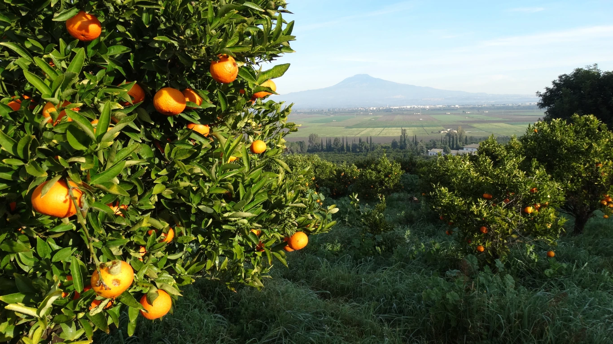
Biologischer Anbau
Handgepflückt, unbehandelt und mit naturbelassener Schale. Seit über 15 Jahren bio, aus Überzeugung weit über die Richtlinien hinaus.
Mehr erfahren ›Bio-Orangen, Zitronen und Mandarinen von unserer Familienfarm in Sizilien. Handgepflückt, unbehandelt und in weniger als sieben Tagen bei Ihnen zu Hause.
Auf unserem Familiengut, der Ortofloricola San Giorgio, wachsen Bio-Zitrusfrüchte mit Schwerpunkt auf alten sizilianischen Sorten wie der Blutorange und der Femminello-Zitrone.
Das Gut liegt zwischen dem Ätna und dem Meer, im Osten Siziliens, der Heimat der süßesten Blutorangen. Herzstück sind 120 Hektar Gartenbau, der größte Teil davon biologische Zitrusfrüchte. Von November bis Juni ernten wir Orangen, Zitronen und Mandarinen, dazu Granatäpfel, Avocados, Bitterorangen, Kaktusfeigen und Oliven.
Unser Ziel: eine Farm, auf der hochwertige Lebensmittel und die Regeneration des Ökosystems zusammengehen.
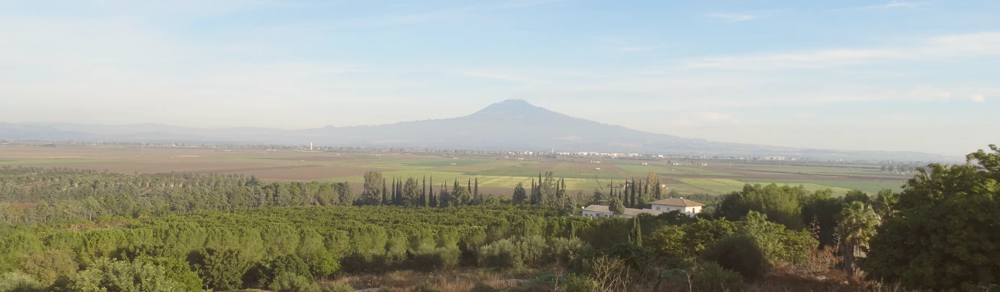
Jede Frucht wird von Hand gepflückt und sorgfältig ausgewählt. Naturbelassen, ohne Wachs, ohne Begasung.

Handgepflückt, unbehandelt und mit naturbelassener Schale. Seit über 15 Jahren bio, aus Überzeugung weit über die Richtlinien hinaus.
Mehr erfahren ›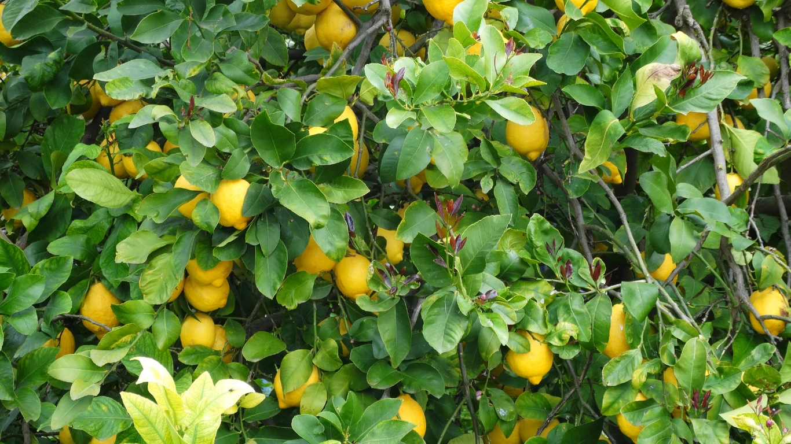
In weniger als sieben Tagen vom Baum zu Ihnen nach Hause. Geerntet und verpackt kurz vor dem Versand.
Jetzt bestellen ›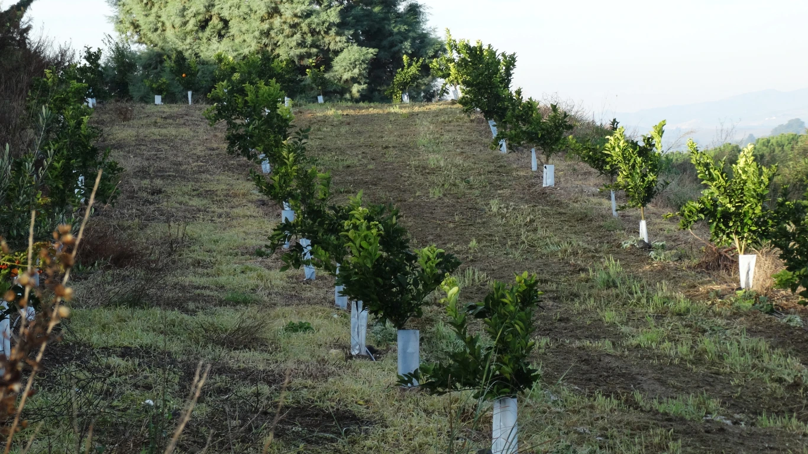
Naturnahe Bewirtschaftung, ausgezeichnet mit dem Wildlife Estate Label und dem ELO Soil Award.
Zu den Projekten ›Frische Bio-Zitrusfrüchte, unkompliziert, nachhaltig und voller Aroma. Dazu Olivenöl und Limoncello vom Gut.
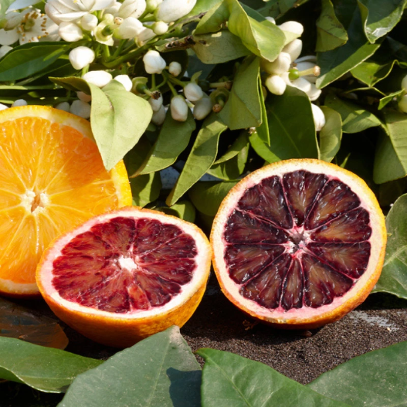
Blonde Orangen, Blutorangen, Zitronen, Clementinen, Limetten, individuell zusammengestellt.
auf Anfrage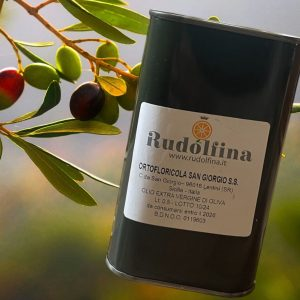
Preisgekröntes Olivenöl vom Gut, ideal als Ergänzung zur Kiste.
30,00 €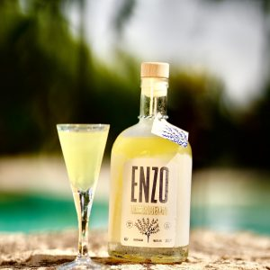
Aus sizilianischen Zitronen, für den Geschmack des Südens im Glas.
24,00 €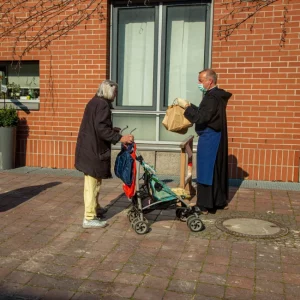
Wir liefern Ihre gespendeten Früchte jede Woche nach München zur Obdachlosenhilfe.
5,00 €Von November bis Juni ernten wir je nach Sorte. Ausgereift am Baum, erst kurz vor dem Versand gepflückt.
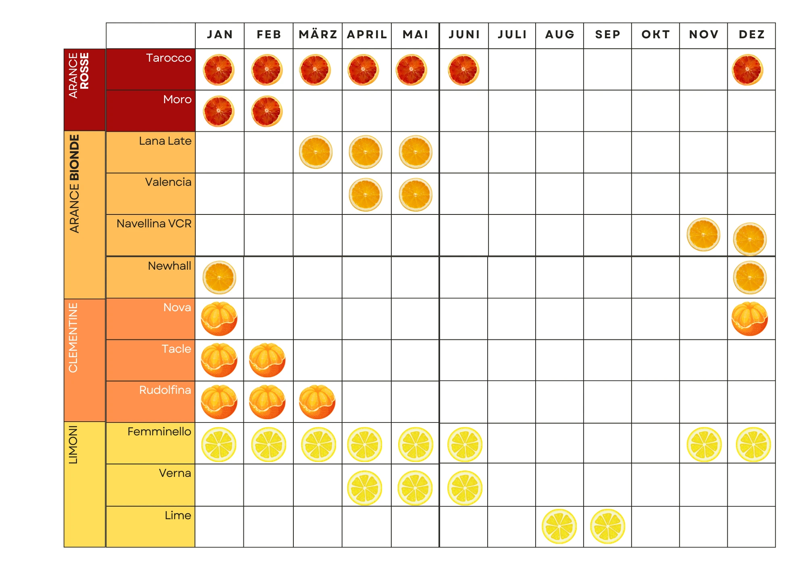
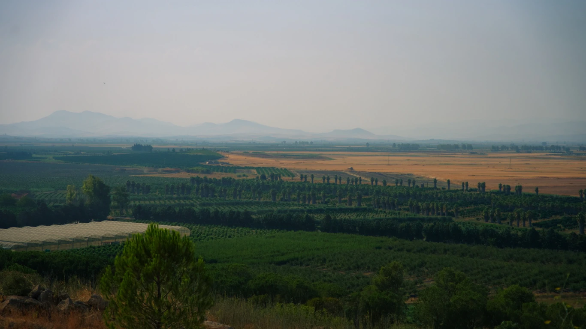
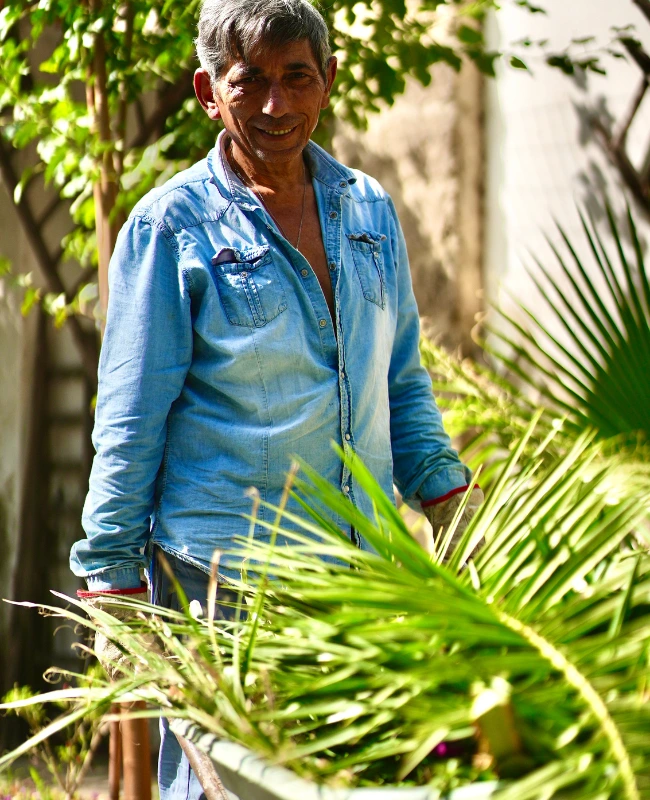
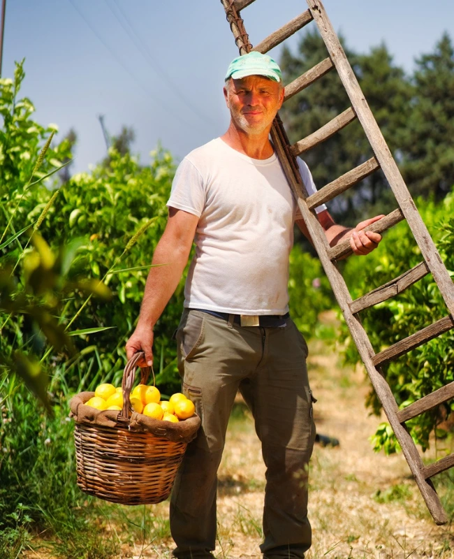
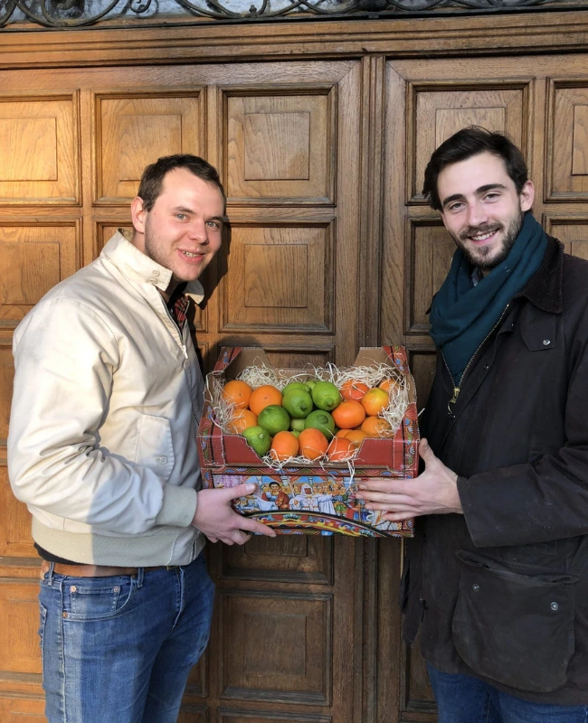
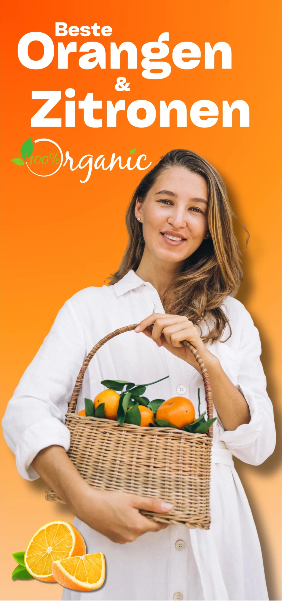
Während wir wachsen, wachsen die Veränderungen mit, die wir zum Wohl der Umwelt vornehmen können. Helfen Sie uns, mehr zu bewirken.
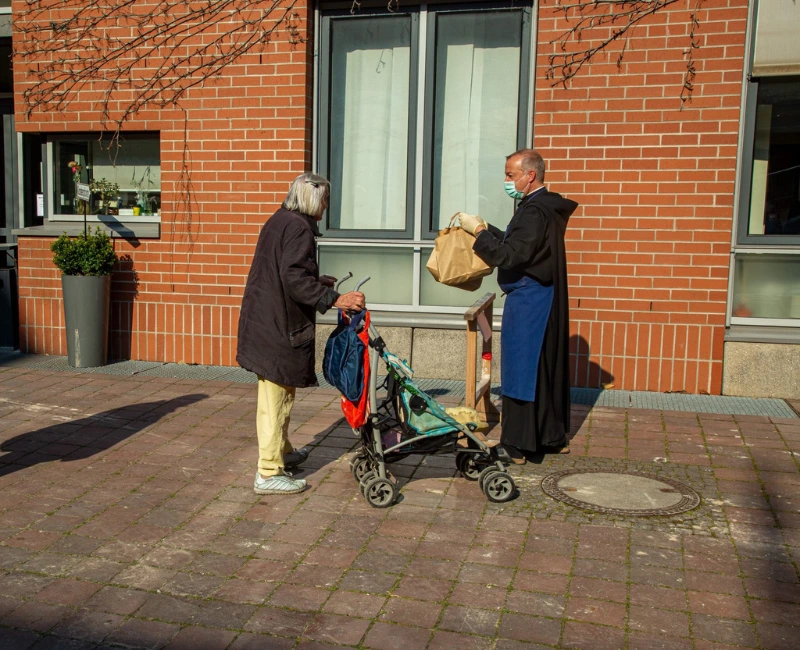
Einmal pro Woche liefern wir alle gespendeten Früchte nach München, direkt zu den Menschen, die sie dringend brauchen.
Mehr erfahren ›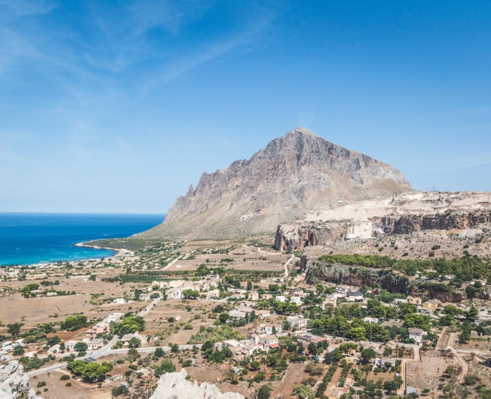
Hügel mit Macchia Mediterranea bepflanzen, Gräben pflegen, Auffangbecken schaffen, Vielfalt in den Kulturen fördern.
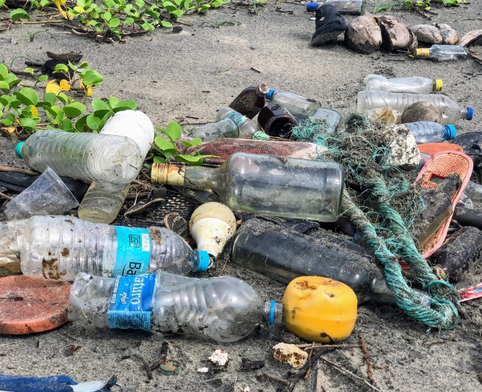
Jedes Jahr sammeln wir Müll von Straßen, Feldern und Stränden Siziliens, bevor er im Meer landet.
Bestellen Sie Ihre Bio-Zitrusfrüchte im Shop. Für Restaurants, Hotels und Händler liefern wir kisten- und palettenweise, auch in regelmäßigen Teillieferungen.